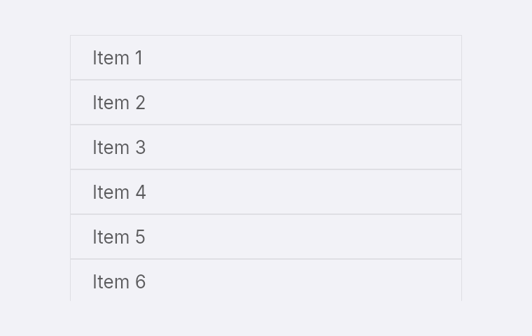
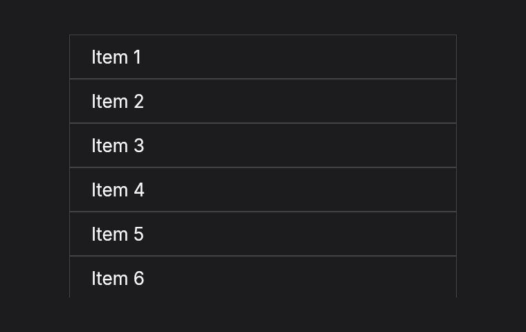

Lists
list(count, row_height, row) is a scrolling list that builds and lays out only the rows on screen. A million rows of 32 px scroll at about 0.12 ms per step on an Apple M5, because the other 999,980 rows are never built.


fn list_rows(theme: &Theme) -> Element<Msg> {
let line = theme.separator();
list(1_000_000, 32.0, move |i| {
row().h_full().items_center().px_4().border(0.5, line).child(text(format!("Item {}", i + 1)))
})
.w(280.0)
.h(190.0)
.rounded_xl()
}How it works
row(index)is called for the visible rows each time the view changes or the list scrolls. Keep it cheap, and make it depend only onindexand your app's state.- Every row has the same height,
row_height. The row you return fills that height, so useh_fullanditems_centerto center its content. - Give the list a height with
h,h_fullorgrow. - The list ignores
gap. Put spacing inside the rows.
Responding to a press
Put on_press on the row you return. The message can carry the index, so your update knows which row was pressed.
list(self.items.len(), 32.0, |i| {
row().h_full().items_center().px_4().on_press(Msg::Open(i)).child(text(format!("Item {}", i + 1)))
})
.h_full()The closure must be 'static, so it cannot borrow from self. Clone what it needs before list, or look the row up from the index with your own data.